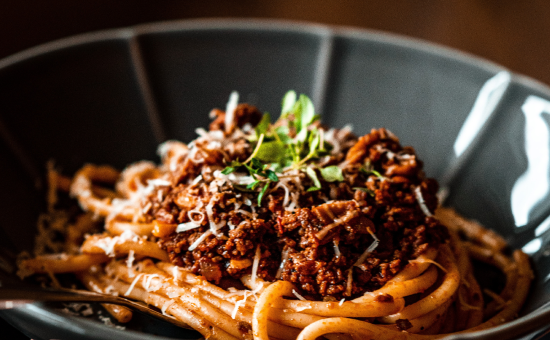
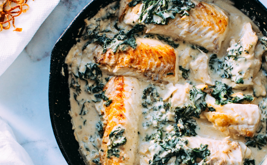
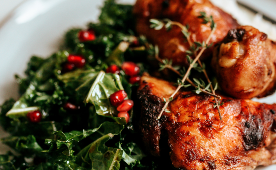
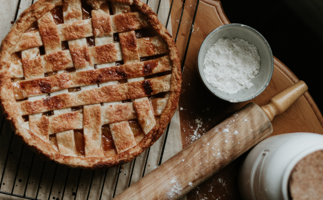

Welcome
Foodies is a trusted resource for home cooks withmore than 3,000 tested recipes, guides, and meal plans, drawing over 15 million readers each month from around the world.
We’re supported by a group of recipe developers, food writers, recipe and product testers, photographers, and other creative professionals.
Newest Recipes
-

- Asian Food
- Thai Red Curry
- Forget ordering takeaway and make your own Thai red curry at home. This classic dish takes just 15 minutes to prep and it's bursting with flavour.
-

- Sweets
- Chocolate Chip Cookies
- This is the best chocolate chip cookies recipe ever! No funny ingredients, no chilling time, etc.
-
- 
- Pasta
- Bolognese
- Hearty and comforting, this meaty, easy bolognese sauce recipe takes less time to make than it does to disappear into hungry tummies.
-

- Fast Food
- Best Humburger
- Best Hamburger Patty Recipe – Thick or thin, made on the grill or stovetop, this is the best recipe for perfect hamburger patties every time!
-
- 
- Seafood
- Salmon with Creamy Spinachi
- This pan seared salmon with creamy spinach recipe is so delicious your entire family will fall in love.
-
- 
- Chicken
- Baked Chicken Wings
- Chicken Wings are a game day staple! This baked wings recipe has the most amazing seasoning consisting of paprika, garlic, salt and pepper.
-

- Fast Food
- Margherita Pizza
- This margherita pizza recipe tastes like a woodfired pie from Italy! It stars a flavor-popping pizza sauce and perfectly chewy pizza crust.
-
- 
- Sweets
- Apple Pie
- This is absolutely the best homemade apple pie you'll ever make! It has a flaky, buttery crust and a tender, lightly-spiced apple pie filling.